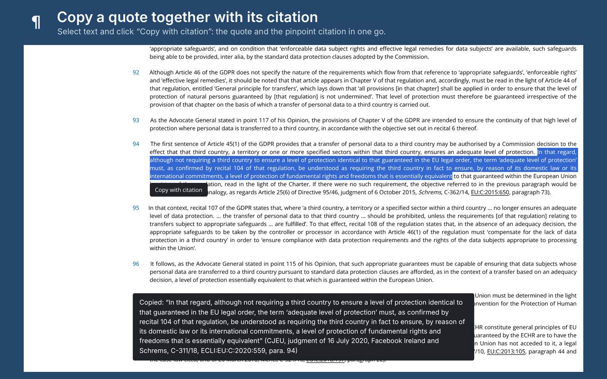
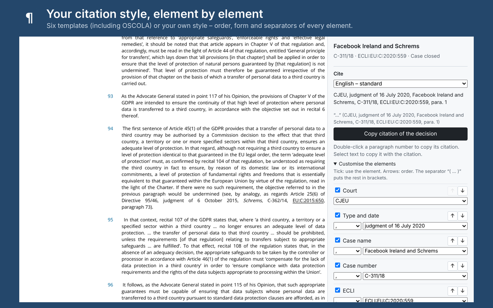
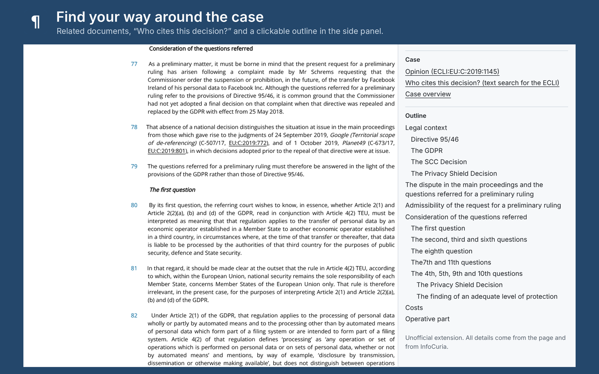

Funktioniert auf der alten InfoCuria-Website unter juris.curia.europa.eu, nicht auf der neuen InfoCuria.
Wer zum Europarecht schreibt, kopiert ständig Parteibezeichnungen, Daten, Aktenzeichen und ECLI aus InfoCuria. Das übernimmt diese Erweiterung. Alle Angaben liest sie aus InfoCuria selbst, nichts wird geraten: Lässt sich eine Angabe nicht sicher lesen, bleibt sie weg, und die Erweiterung sagt das.
Fundstelle per Doppelklick auf die Randnummer
Ein Doppelklick auf eine Randnummer legt die fertige Fundstelle in die Zwischenablage, etwa EuGH, Urteil vom 16. Juli 2020, Facebook Ireland und Schrems, C-311/18, ECLI:EU:C:2020:559, Rn. 94. Das funktioniert bei Urteilen, Beschlüssen, Schlussanträgen und Gutachten.

Zitat mit Fundstelle kopieren
Text markieren und „Mit Fundstelle kopieren“ klicken: Sie erhalten das Zitat in Anführungszeichen und dahinter die Fundstelle mit der passenden Randnummer, bei mehreren Absätzen mit „Rn. 93 bis 95“.

Zitierte Randnummern sofort lesen
Jede ECLI im Text wird zum Link. Ein Klick zeigt die zitierte Randnummer der anderen Entscheidung: in der Sprache des geöffneten Urteils, sonst auf Englisch, sonst in der Verfahrenssprache.

Eigener Zitierstil
Sechs Vorlagen, darunter die Zitierweise des Gerichtshofs und OSCOLA, oder ein eigener Stil: jeden Baustein ein- und ausschalten, verschieben, in der Form ändern (etwa „Rn. 94“, „Rz. 94“ oder „para. 94“) und den Trenner wählen.

Verfahren und Gliederung im Seitenbereich
Der Seitenbereich zeigt die weiteren Dokumente des Verfahrens, etwa Schlussanträge, Rechtsmittel oder Vorinstanz, eine Suche nach Entscheidungen, die das Urteil zitieren, und eine anklickbare Gliederung.

Installation
- Bei GitHub auf Code → Download ZIP klicken und die Datei entpacken.
- In Chrome (ab Version 116)
chrome://extensionsöffnen, in Edgeedge://extensions. - Den Entwicklermodus einschalten.
- Entpackte Erweiterung laden wählen und den Ordner
extensionauswählen. - Ein Urteil auf juris.curia.europa.eu öffnen und die Seite einmal neu laden.
Die Oberfläche der Erweiterung gibt es auf Deutsch und Englisch.
Häufige Fragen
Ist das Tool kostenlos?
Ja. Es ist kostenlos und quelloffen (MIT-Lizenz).
Funktioniert es auf der neuen InfoCuria-Website?
Nein. Es funktioniert auf den alten Rechtsprechungsseiten von InfoCuria unter juris.curia.europa.eu, die weiterhin erreichbar sind.
Welche Zitierstile gibt es?
Sechs Vorlagen: Deutsch Standard, Deutsch wie der Gerichtshof zitiert, Deutsch kurz, Englisch Standard, Englisch wie der Gerichtshof zitiert und OSCOLA. Außerdem lässt sich ein eigener Stil Baustein für Baustein zusammenstellen.
Welche Browser werden unterstützt?
Google Chrome ab Version 116 und andere Chromium-Browser wie Microsoft Edge.
Sammelt die Erweiterung Daten?
Nein. Sie ruft nur öffentliche Seiten von InfoCuria ab und speichert zwei Einstellungen lokal im Browser.